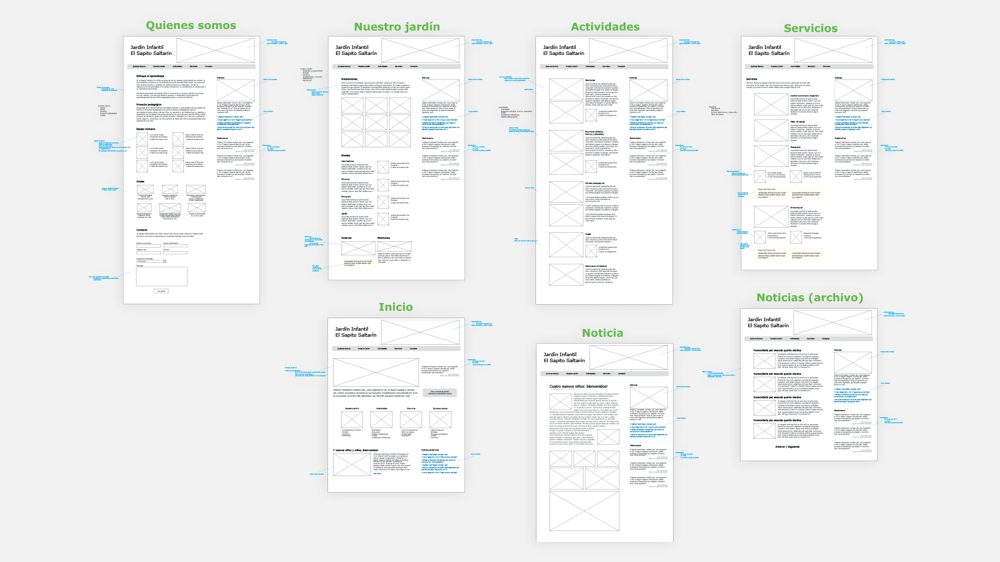

Designer, developer, and product manager, I'm the ultimate generalist. My background is in cybersecurity, public safety, and small business consulting. Lately, I’m deep into static analysis at @sonar, tackling tough technical challenges with a product mindset.
Brand
I've worked with small businesses that entrusted me with shaping their brand identity. My work has spanned logo design and essential branding materials like business cards, but often extends to full website design, including copywriting. I've also created custom illustrations when needed.
Sapito Saltarin
"Jumpy Froggy" kindergarten’s visual identity is as playful and innocent as its name. Back in 2011, I designed and built everything below, from the logo and branding to a fully custom WordPress theme, along with illustrations and copy. Both the branding and website have held up for over 14 years.
More recently, I was asked to migrate the domain, make the site responsive, and replace WordPress with a simpler solution. I also refreshed the bitmap illustrations with crisp vectors. See it online!
On my toolbox
Wireframes
Wireframes are quick, inexpensive, and make visual ideas tangible. When working with workflows or information design, they keep me nimble and serve as a reference point for conversations. Overall, I see them as a low-cost way to reduce risk.
Below is an early wireframe for the kindergarten website as an example. Notice that not everything made it, the sidebar for instance, was moved below the main section.

Illustration
Not everything is a kindergarten website. Most of my work has been in business, where forms and text dominate. Here, I simply want to show that I can draw, and sometimes, that skill proves useful.
If words are food for thought, illustration is dessert.
A well-placed visual enhances storytelling, making complex concepts tangible. I illustrate when it counts, whether to clarify, persuade, or simply make an idea more memorable.